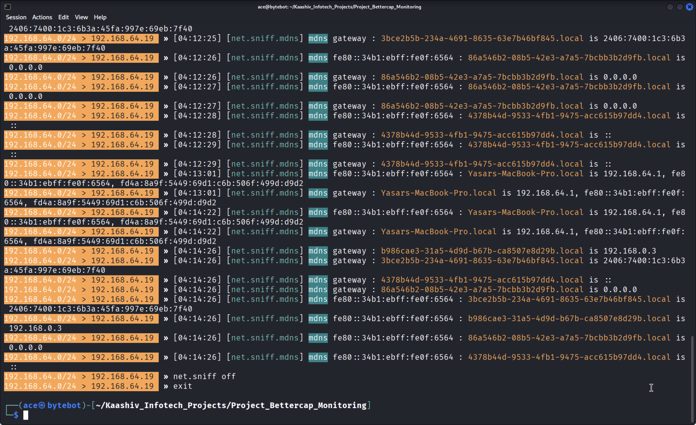
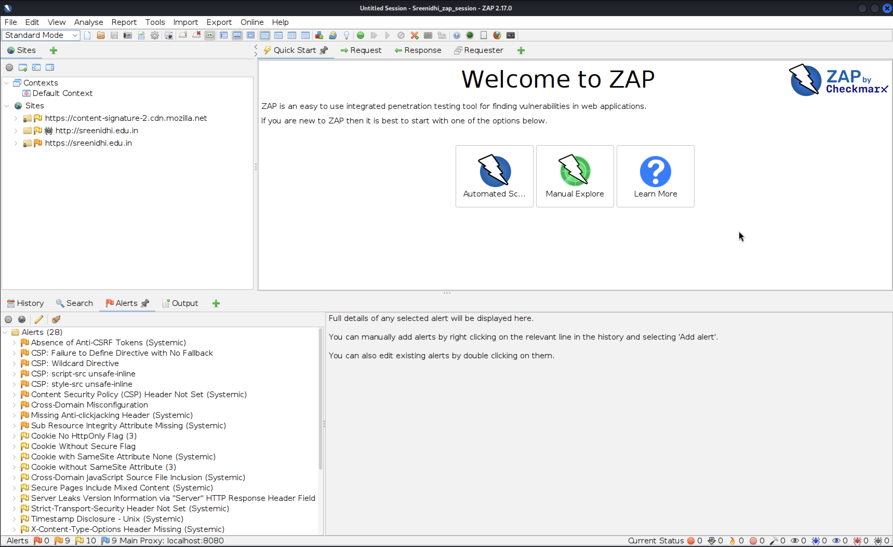

Nmap Network Scanning
Performed network scanning to identify open ports and services.

Cybersecurity Enthusiast | SOC Analyst Aspirant
Performed network scanning to identify open ports and services.
Monitored network traffic and analyzed packet flow.

Performed web vulnerability assessment using OWASP ZAP.

Captured and analyzed network packets using Wireshark.

Investigated authentication logs to detect failed login attempts.